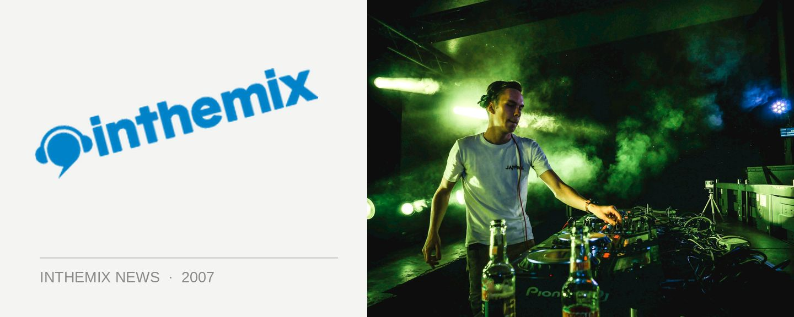

Changes afoot at Sublime
It was barely a week ago that Sublime celebrated its 11th Birthday, making it one of the longest running club nights in the world. Now comes the news that the ‘winds of change’ are blowing with some exciting transformations underway to its format.
The winds of change will be blowing the strongest on the rooftop terrace with the new ‘Suburbanite’ room, featuring an RnB music policy featuring performances from the likes of Nick Toth, Maya Jupiter, Echo, Lenno, Sleazy D, Flite, Tom Piper, Mo Funk and more.
And in recognition of the fact that house, breaks and electro have been getting down and dirty with each other for quite a while now, the ‘Cargo’ and ‘Beat Fix’ rooms will be amalgamated into the new ‘Go-Beat’ space that will be taking over the Icon Room. MC Losty will be playing host to a varied assortment of DJs across multiple genres including Klaus ‘Heavyweight’ Hill, James Taylor, Tony Venuto, Lil Chris, Shamus, John Glover, Brenden Fing and many more.
The ‘Young Guns’ will now be moving up to The Box where Scotty G, Slim, Shadower, Arbor, S Dee, Toxic, Nitrouz, Spank, E Tek and Spin Out will be playing tunes through the sound system that was originally ripped out of Sublime’s classic venue in Pitt Street.
And the main ‘Voodoo’ room will also be subject to some interesting changes. The tunes will now be kicking off early in the evening with house and electro before soaring into the trance that the main room is known for, with local house heads Kate Monroe, Ben Morris, Dave Malcolm and The Potbelleez stepping up alongside Voodoo’s resident Trance superstars that have manned the decks for so many years.
Come check out the new format in all its glory when it launches at Sublime this Friday night August 3rd!